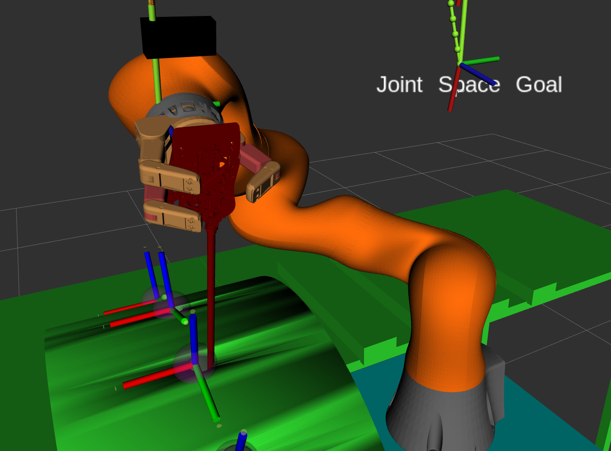

Running experiments¶
This documentation section shows how to run the experiments that are described in the thesis of this project.
Robot planner 1: Simple MoveIt planning¶
roslaunch main program1.launch
rosrun kuka_barrett robot_planner1
Robot Planner 2: Simulation layout and reachability experiments¶
To run the experiment 2a: .. code-block:: bash
roslaunch main program1.launch rosrun kuka_barrett robot_planner2a
and to run the experiment 2b run the following commands in different terminals .. code-block:: bash
roslaunch main program3.launch rosrun kuka_barrett robot_planner2b
Robot Planner 3: Trajectory planning¶
3a: Circular trajectories in task space¶
roslaunch main program3.launch
rosrun kuka_barrett robot_planner3a
3b: Line segment trajectories in task space¶
roslaunch main program3.launch
rosrun kuka_barrett robot_planner3b
3c: Cubic Spline trajectories in task space¶
roslaunch main program3.launch
rosrun kuka_barrett robot_planner3c
3d: B-Spline trajectories in task space¶
roslaunch main program3.launch
rosrun kuka_barrett robot_planner3d
3e: Polynomial trajectories in joint space¶
roslaunch main program3.launch
rosrun kuka_barrett robot_planner3e
3f: Trajectories in joint space with trapezoidal velocity profile¶
roslaunch main program3.launch
rosrun kuka_barrett robot_planner3f
3g: Trajectories in joint space with s-curve velocity profile¶
roslaunch main program3.launch
rosrun kuka_barrett robot_planner3g
3h: Helical trajectories in task space¶
roslaunch main program3.launch
rosrun kuka_barrett robot_planner3h
Robot Planner 4: Simple cube pick-and-place experiment¶
roslaunch main program2.launch
rosrun kuka_barrett robot_planner4
Robot Planner 5: Visual servoing¶
To run the robot planner of this experiment first run the following commands in different terminals
roslaunch main program2.launch
rosrun kuka_barrett robot_planner5
to start the stereoscopic vision run the following launch file. Caution, the following launch files might be CPU and GPU intensive
roslaunch vision stereo.launch
to run the visual servoing services run the following
roslaunch vision visual_servo.launch
Robot Planner 6: RCM alignment error in insertion and retraction¶
To run the experiment run the folloei g commands in different terminals
roslaunch main program2.launch
rosrun kuka_barrett robot_planner6
To run the node that calculates the fulcrum error in real time, run the following command
rosrun taskspace fulcrum_state_node
to plot the fulcrum error run the following
rosrun rqt_plot rqt_plot /fulcrum/error
to inspect the nodes and topics of this experiment run the following ROS package
rosrun rqt_graph rqt_graph